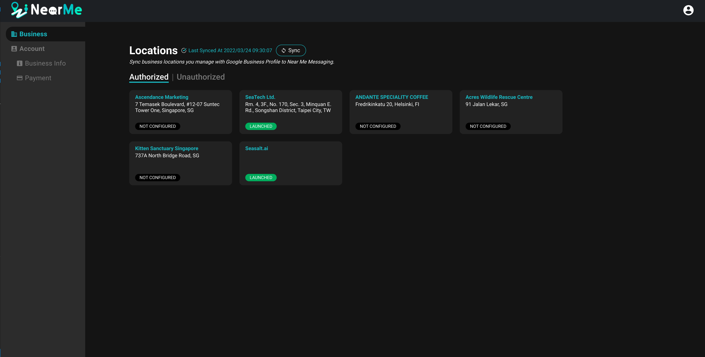
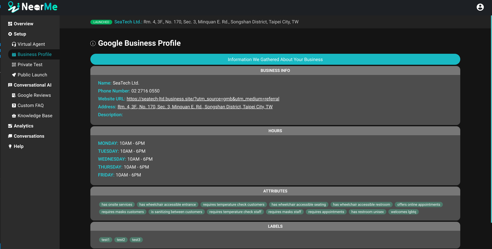
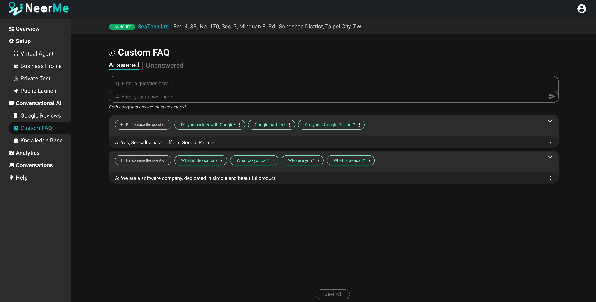
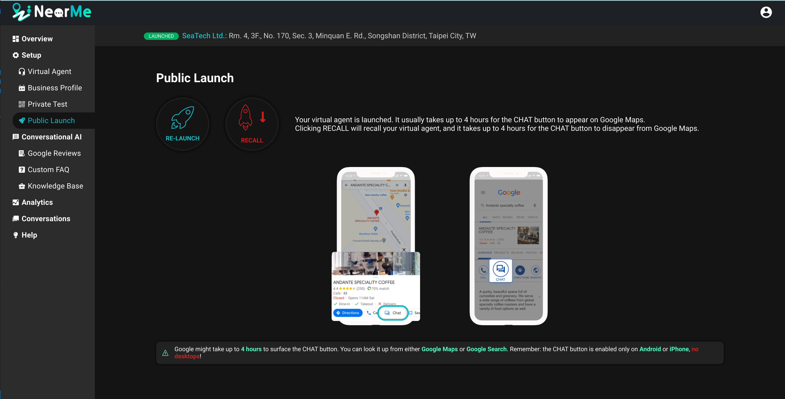
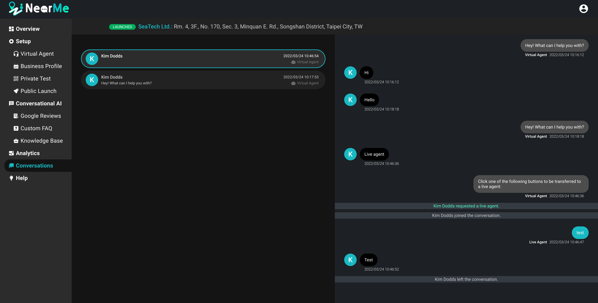

NearMe¶
Table of Contents
NearMe Product Overview¶
NearMe Messaging is a product that aims to make conversational AI accessible to small business owners. It is built with a deep integration with Google Business Messages and Google Business Profile, which allows us to generate a bot based on existing business information and make it accessible to customers via Google Maps.
After logging into the NearMe site with their Google Account, users are shown a list of their business listings on GBP. For each one, they can create a new bot.
{kind=link}
Once they start the bot generation process, it will grab all the business information from GBP and use that data to create a new bot from a template.
{kind=link}
After the initial version of the bot is generated, the business owner can add custom FAQs and additional data to the knowledge base to improve the bot’s answers.
{kind=link}
The business owner can test the bot locally and then deploy it publicly to Google Maps.
{kind=link}
Once deployed, they can check customer conversations and even join the conversation. They also have access to analytics that track user interactions.
{kind=link}